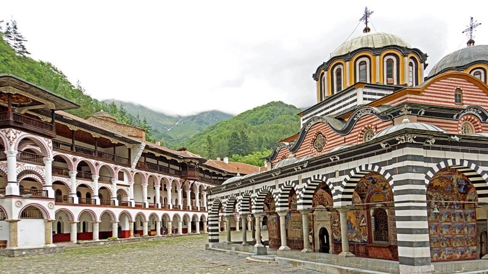
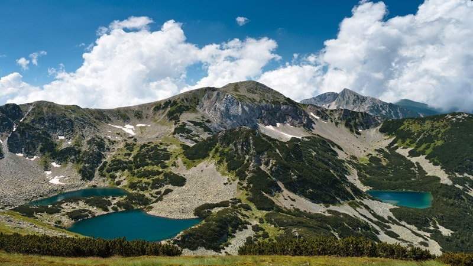
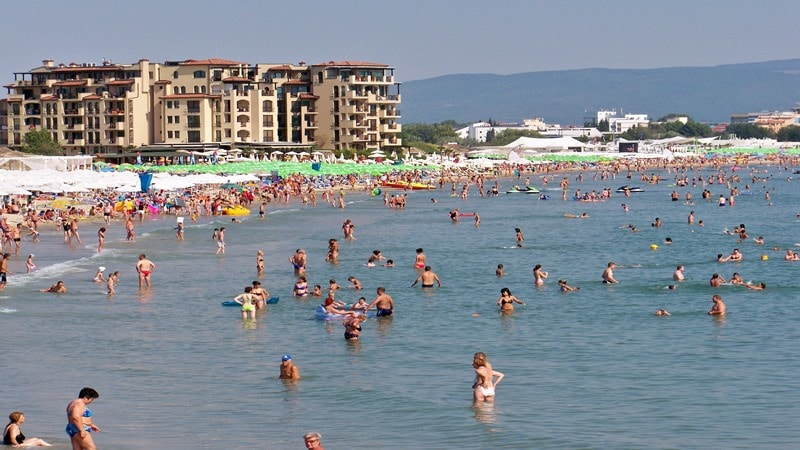
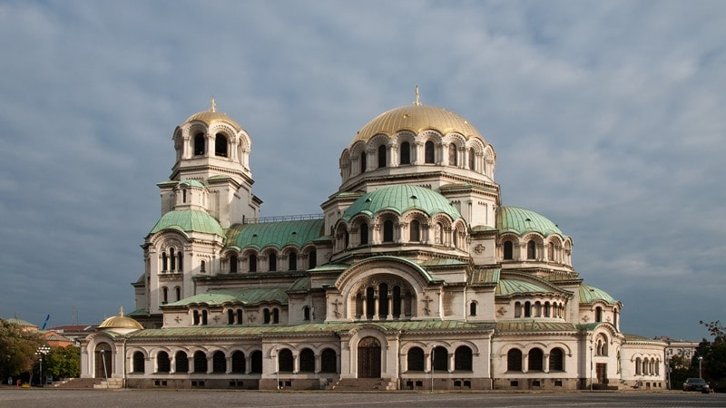
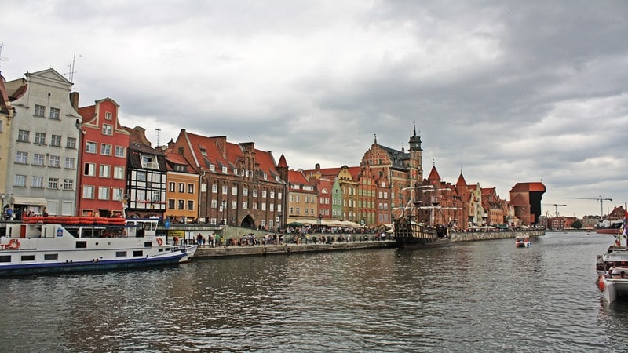
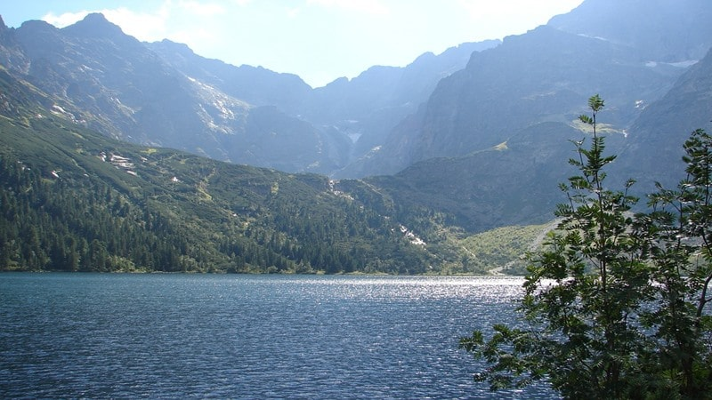
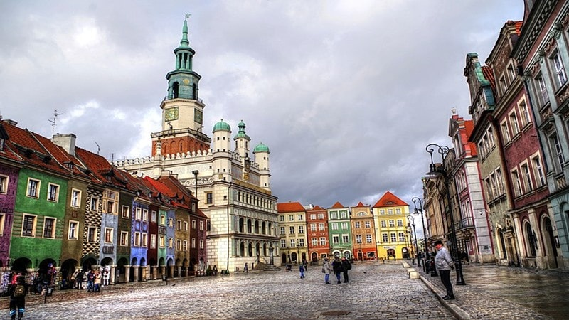
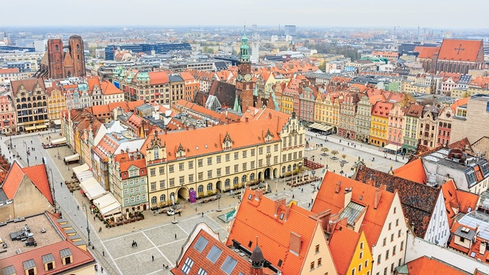

Take a trip to Bulgaria or Poland
Rila Monastery
Take a trip to Rila Monastery and soak in the serene surroundings among the Rila mountains. Founded in the 10th century, and held in high esteem as being an important historic and cultural monument, the Eastern Orthodox Rila Monastery is an architectural icon. Labelled as the Jerusalem of Bulgaria, it is the biggest monastery in the country and is home to compelling religious iconography, including wall paintings, carvings and historical artifacts. The ancient monastery is still active and is home to around 60 monks who still live and work in the tranquil peace of the monastery inside its ornate buildings. The striking stripes of the exterior and gently curved arches, along with the crowning domes, set the monastery apart from the surrounding tree-covered mountainous landscape.
Pirin national park
Home to more than 70 glacial lakes, old forests and soaring 2,915-metre peaks and ridges, the Pirin National Park is a Bulgarian national treasure. The National Park is a safe heaven for many different types of rare species that use the Balkan mountain range for shelter. Large animals still roam the slopes, from brown bears and wild boar to gray wolves and jackals; this is a remote and wild area that is under threat from development by ski resorts.Spend your time visiting the unimaginably beautiful park by hiking the numerous paths, cycling among the alpine meadows or fishing alongside waterfalls. You can even stay overnight in Pirin’s huts, and find the famous Baykuchevata Macedonian pine tree that is said to be approximately 1,350 years old!
Sunny beach
Sunny Beach is famous for its long stretches of soft, sandy beaches that slope into the Black Sea and also for its numerous tourists who visit the resort town to enjoy its lively nightlife. The golden beaches stretch for eight kilometers along the coast and offer the perfect spot to spend time soaking up the sun and taking a swim. The beaches in the area are clean and are sheltered from the elements, meaning the sea is perfect for swimming, whilst the plentiful hotels along the coast are also reasonably priced and family-friendly. This is the place to visit if you want to spend a few days relaxing in the sunshine and exploring the surrounding area, such as the ancient town of Nessebar.
Alexander Nevsky cathedral
Situated in the heart of the stunning city of Sofia is the iconic symbol of Bulgaria: the Aleksander Nevsky Cathedral. Paid for by the people of the city and built between the years 1882 and 1912, the cathedral was constructed to honor the lives of the 200,000 Russian soldiers who were killed fighting in the Russo-Turkish war for Bulgaria’s freedom from the rule of the Ottomans. The cathedral itself is ornately detailed, with a decadent 45-meter high, gold-plated dome. Inside, you can walk among the many intricate mosaics, meaningful murals and depictions of saints and angels; huge chandeliers hang low, dripping in decadent gold, whilst the solid wood of the altar and pews is delicately carved.
Malbork castle

Malbork Castle was founded in 1274 by the Teutonic Knights who used it as their headquarters to help defeat Polish enemies and rule their own northern Baltic territories. The castle was expanded several time to host the growing number of Knights until their retreat to Königsburg in 1466. Today it is the most popular tourist attraction in the city of Malbork, Poland.
Gdańsk, Poland
Located on the Baltic coast is the beautiful city of Gdańsk. Gdańsk is part of Tricity, a metropolitan area consisting of three cities: Gdańsk, Gdynia and Sopot, as well as minor towns nearby them. The city has a rich and complex political history with periods of Polish rule, periods of German rule, and extensive self-rule. The city was the birthplace of the Solidarity movement which played a major role in bringing an end to Communist rule across Central Europe. On one hand, you can visit Gdańsk’s Old Town to see many 17th century structures, including mills and churches, on the other, shipyards and industrial districts which are now partly abandoned.
Tatra mountains
This is another popular mountain range that is in fact the highest and most spectacular in Poland. It forms a natural border between Poland and Slovakia. The nature of the mountains, together with relatively easy accessibility, makes them a favourite destinations for tourists. Zakopane, a town which lies in the southern part of the Podhale region at the foot of the Tatra Mountains is called “the winter capital of Poland”. There are peaks are covered with all-year snow, there are waterfalls, ponds – everything that you need if you like mountains. The High Tatras are a popular destination for mountaineering, skiing, and other winter sports.
Poznań, Poland
Poznań one of the oldest and most populated cities in Poland. It lies on the banks of the Warta River in the western part of the country. As one of the largest Polish centers of trade, industry, sports, education, technology, tourism and culture it attracts many tourists from Europe and beyond. In the photo you can find the old Market Square (“Stary Rynek”) in Poznań – Poznań is crowded with churches, historical monuments, art galleries and theatres. You should definitely see the Old Market with renaissance Town Hall.
Wrocław, Poland
Wrocław, the largest city in western Poland and historical capital of Silesia. Wrocław begs to be explored with 12 islands, 100 bridges and many cultural attractions. The city is famous for its large number of nightclubs and pubs. You will be amazed with the sights, the city’s big market square, multi coloured buildings and Cathedral island just to mention a few. The list above is not in any way comprehensive and is just an small cut of what Poland has to offer. So book your tickets, get your visa if required, and come over to Poland!